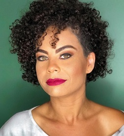

About me
Minha foto
Minha história
I'm Ariadne Spontone, I was born in the city of Botucatu which is in the countryside of the state of São Paulo in Brazil on December 8th, 1985. I am the second daughter, and I was born ten years after my brother, being considered an only child. Throughout my childhood I had contact with many adult people whose main characteristic was doing, with that I learned many techniques and developed good manual skills.
Already in adolescence, I tested many possibilities, through sports, arts and even religions. Having little financial availability, I learned early on to save and plan what I would like to accomplish. Today I see that this skill should be the basic subject of ECE. This vast experience in various fields enabled me to learn to see the same scenario from different perspectives.
Today, already in the adult phase of life, I consider myself a struggling person who conquers his dreams and is not afraid to fight for what I believe, all with an attentive eye to the small details and great nuances that different points of view can bring. I am currently married and have two daughters; both bring me daily challenges and joys that drive me to always seek to be a better person every day.
“Love starts when we push aside our ego and make room for someone else.”
Rudolf Steiner
My hobbies
Currently my hobbies are:
- Cycling;
- Sewing notebooks.
I've been riding my bike since moving to Canada for all the everyday activities and it's been a lot of fun. My second hobby is hand-sewing handmade notebooks, in which I can use my creativity and create a unique notebook for each person I want to give. This activity brings me pleasure and a feeling of well-being.